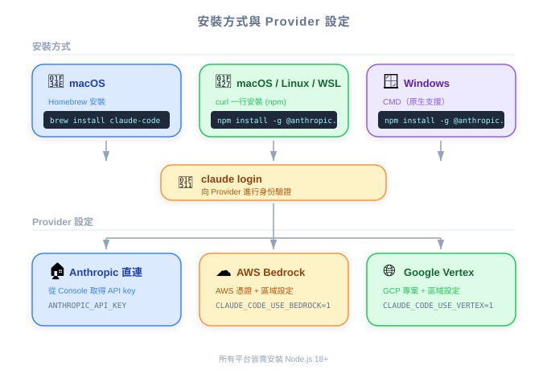

| 項目 | 細節 |
|---|---|
| 考試涵蓋 | D3 — Effective Claude Code Usage（佔考試 30%） |
| Task Statements | 3.1 (CLAUDE.md hierarchy — awareness level) |
| 課程來源 | claude-code-in-action / 02-getting-started / Lesson 05（純文字課程） |

Claude Code 是一個命令列工具，開發者用一行指令即可安裝。PM 需要知道它是 CLI-only（沒有 GUI）、支援所有主流平台，且可設定透過企業雲端供應商（AWS Bedrock、Google Cloud Vertex）路由以符合合規要求。
| 概念 | 商業類比 |
|---|---|
| CLI-only 工具 | 像 Slack 只有聊天沒有 email 備案 — 它強制採用原生工作流 |
| Cloud provider 路由 | 像選擇付款走 Stripe 直連還是透過銀行的支付閘道 |
| 首次啟動驗證 | 像存取任何企業 SaaS 前的 SSO 登入 |
| 因素 | 直接 Anthropic API | AWS Bedrock | Google Cloud Vertex |
|---|---|---|---|
| 設定複雜度 | 最低 | 中等 | 中等 |
| 企業帳單 | 獨立 Anthropic 帳單 | 合併至 AWS 帳單 | 合併至 GCP 帳單 |
| 資料駐留 | Anthropic 基礎設施 | 你的 AWS 區域 | 你的 GCP 區域 |
| 最適合 | 個人開發者、小團隊 | AWS 優先組織 | GCP 優先組織 |
你的工程主管問將 Claude Code 推廣到 50 人團隊需要多長時間。根據本課內容，哪個答案最準確？